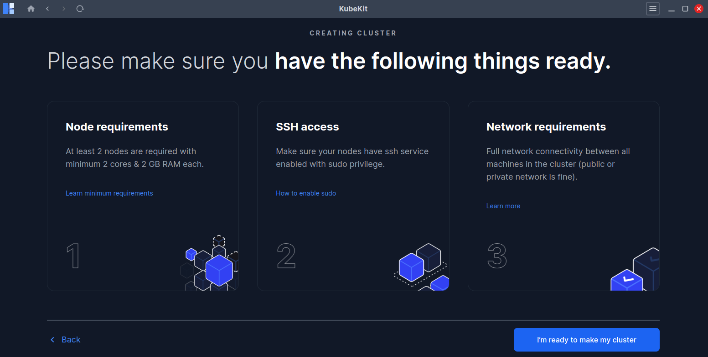
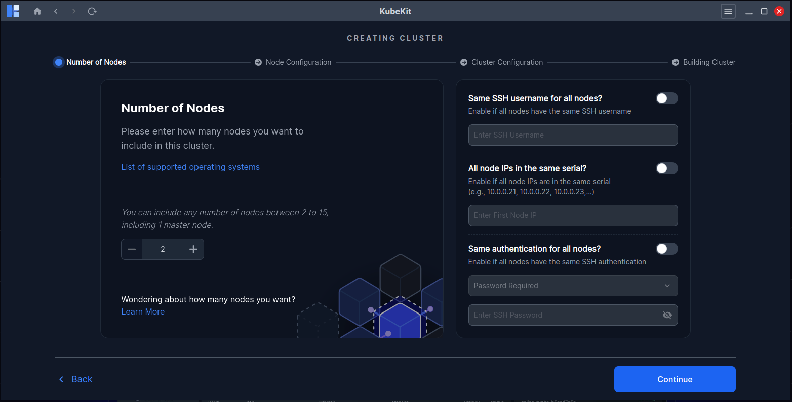

Prerequisites
Before starting the cluster creation process, make sure the following requirements are met:

Click on I'm ready to make my cluster button to continue the process.
Node Requirements
- You have at least two nodes(1 master, 1 worker) to create a cluster.
- 2 GB or more of RAM per node (any less will leave little room for your apps).
- 2 CPUs or more for control plane nodes.
- All nodes must have any of Ubuntu, Debian, Fedora, CentOS, RedHat and Amazon Linux operating systems. Also combination of multiple operating system for a single cluster is supported. For details click on List of supported operating systems. 
SSH Requirements
- SSH access must be enabled to all your nodes from your PC where KubeKit is running.
- For password-less and SSH key(.pem,.ppk,etc) based access you need to enable sudo previliges. Click on How to enable sudo for detail instructions.
Network Requirements
- Full network connectivity between all nodes in the cluster (public or private network is fine).
Tips for a Smooth Cluster Creation
- Ensure package managers are up to date in all of your nodes.
For Ubuntu and Debian run following command to update
For Fedora,Redhat, CentOS and Amazon linux run following command to updatesudo apt-get update -ysudo yum update -y - Stable network connectivity in all nodes.
- Faster Internet speed ensures faster cluster creation.
By following these steps, you can create a stable, fully functional Kubernetes cluster with KubeKit, ready for application deployment and management.